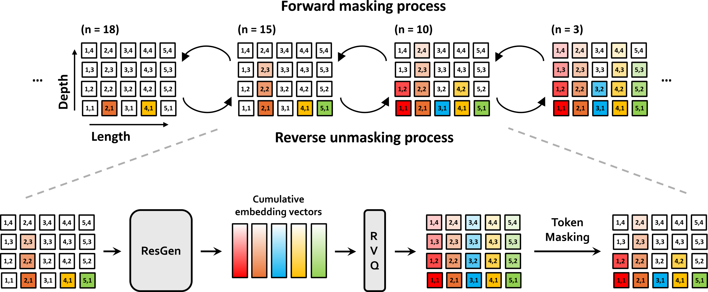

Efficient Generative Modeling with
Residual Vector Quantization-Based Tokens
Abstract. We introduce ResGen, an efficient Residual Vector Quantization (RVQ)-based generative model for high-fidelity generation with fast sampling. RVQ improves data fidelity by increasing the number of quantization steps, referred to as depth, but deeper quantization typically increases inference steps in generative models. To address this, ResGen directly predicts the vector embedding of collective tokens rather than individual ones, ensuring that inference steps remain independent of RVQ depth. Additionally, we formulate token masking and multi-token prediction within a probabilistic framework using discrete diffusion and variational inference. We validate the efficacy and generalizability of the proposed method on two challenging tasks across different modalities: conditional image generation on ImageNet 256×256 and zero-shot text-to-speech synthesis.. Experimental results demonstrate that ResGen outperforms autoregressive counterparts in both tasks, delivering superior performance without compromising sampling speed. Furthermore, as we scale the depth of RVQ, our generative models exhibit enhanced generation fidelity or faster sampling speeds compared to similarly sized baseline models.
Model Overview

An overview of the forward masking and reverse unmasking processes is shown at the top, with a detailed depiction of the reverse unmasking process below. In the top figure, forward masking proceeds from right to left, incrementally masking more tokens, while reverse unmasking progresses from left to right, iteratively revealing the masked tokens. White boxes denote masked tokens and colored boxes represent tokens that have been uncovered. The bottom figure illustrates the reverse unmasking process in detail. Starting from masked residual vector quantization (RVQ) tokens, our method first predicts cumulative RVQ embeddings. These embeddings are then quantized and partially masked again. Through a series of iterations, each round predicts the values of the masked tokens and replaces them until the entire token sequence is filled.
Zero-Shot TTS (LibriSpeech)
Through in-context learning, ResGen produces speech using a reference audio and its corresponding text. We represent the prompt in blue, and the generated audio in green. When dividing prompts into 3-second segments, the audio boundaries may not always end in silence and could sometimes cut off words midway. When you click on "Show baselines", you can see the ground truth and baseline audio, etc. YourTTS, Vall-E, CLaM-TTS, and DiTTo-TTS audios are brought from YourTTS demo1, Vall-E demo2, CLaM-TTS demo3, and DiTTo-TTS demo4 respectively.
Celebrities
ResGen is capable of replicating the voices and speech styles of well-known personalities. We represent the prompt in blue, and the generated audio in green. When you click on "Show baselines", you can see the ground truth and baseline audio, etc. Texts corresponding to the generated audio, CLaM-TTS and DiTTo-TTS audios are brought from CLaM-TTS demo1 and DiTTo-TTS demo2.
Anime Characters
ResGen is capable of replicating the voices and speech styles of well-known anime characters. We represent the prompt in blue, and the generated audio in green. When you click on "Show baselines", you can see the ground truth and baseline audio, etc. Texts corresponding to the generated audio, Mega-TTS, CLaM-TTS, and DiTTo-TTS audios are brought from Mega-TTS demo1, CLaM-TTS demo2, and DiTTo-TTS demo3.